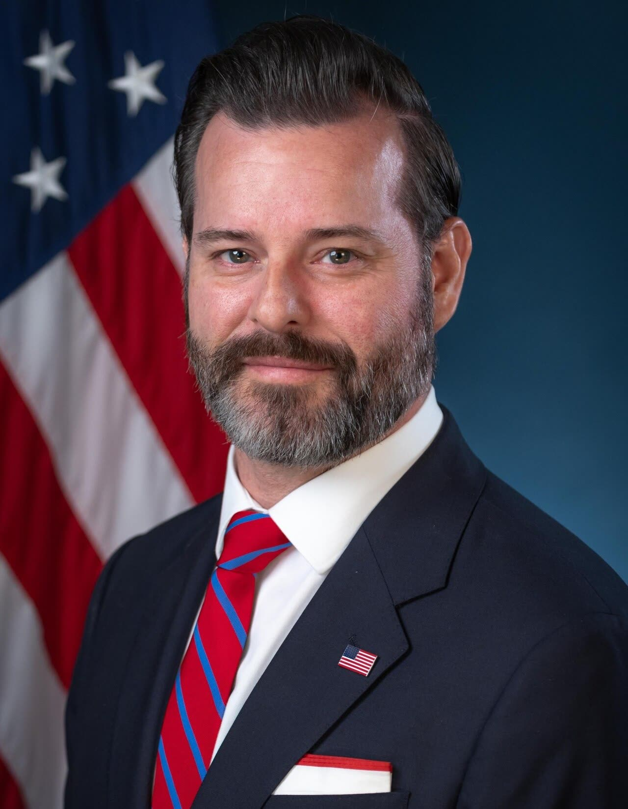

Usa, si dimette il procuratore di Miami che indagava su chi indagò Trump
Le dimissioni vengono dopo le elezioni, ma nessuna fonte ufficiale lo collega al voto: un procuratore cerca reati, non promette imputati, per Trump come per i suoi avversari.
Redazione Contrappunto · aggiornato il 06.11.2026

.jpg){kind=link}
Negli Stati Uniti ogni distretto federale ha un «U.S. Attorney», il procuratore federale: lo nomina il presidente, il Senato lo conferma, e guida l'ufficio dell'accusa per i reati federali del distretto. Venerdì 6 novembre 2026 il ministro della Giustizia, Todd Blanche, ha annunciato le dimissioni di Jason Reding Quiñones, procuratore del distretto meridionale della Florida (Miami). Il suo ufficio guidava l'inchiesta detta «grande cospirazione», sull'ipotesi che le indagini su Trump dal 2016 in poi fossero parte di un complotto contro di lui; per NBC non ha ancora portato accuse. Le dimissioni arrivano tre giorni dopo le elezioni di metà mandato, in cui i repubblicani hanno perso il Congresso. Il titolo di Anadolu collega i due fatti: guardiamo se qualcuno lo dice davvero.
Vedi di più: 3 parole spiegate, cosa si racconta
Cosa si raccontaReuters (anche sul Hindu), NBC e CNN scrivono che si dimette il capo dell'ufficio dell'inchiesta sulla «grande cospirazione», senza spiegare il perché in modo ufficiale. Anadolu titola «dopo le sconfitte» elettorali. Fox News e il Washington Examiner, di area destra, danno la notizia e la inseriscono nella serie di addii al Dipartimento di Giustizia, senza attribuirla al voto. [Anadolu Agency] [The Hindu] [Reuters] [NBC News] [CNN] [Fox News] [Washington Examiner]
- Distretto meridionale della Florida
- Il distretto federale con sede a Miami: l'ufficio del procuratore federale lì ha seguito, tra l'altro, l'incriminazione di Raúl Castro (NBC, Fox).
- «Grande cospirazione»
- Nome giornalistico dell'inchiesta su ex funzionari delle forze dell'ordine coinvolti nelle indagini su Trump dal 2016 al 2024, sulla tesi di un complotto contro i suoi diritti (NBC, CNN). Anadolu la descrive come un'inchiesta «su Trump»: le altre fonti dicono il contrario.
- Midterm
- Le elezioni di metà mandato presidenziale, martedì 3 novembre 2026: i repubblicani di Trump hanno perso il controllo del Congresso (Reuters).
- Il 6 novembre Todd Blanche ha annunciato le dimissioni di Jason Reding Quiñones, procuratore federale di Miami: il suo ufficio guidava l'inchiesta sulla «grande cospirazione», senza accuse finora.
- Nessuna fonte ufficiale dà un motivo; CNN, con fonti anonime, parla di pressioni interne per un caso promesso e non arrivato.
Reuters, NBC e CNN raccontano le dimissioni di Jason Reding Quiñones, annunciate dal ministro Todd Blanche, come l'uscita del capo dell'ufficio di Miami che guidava l'inchiesta sulla «grande cospirazione», ancora senza imputati; Fox le mette nella serie di addii al Dipartimento di Giustizia; Anadolu le lega alle sconfitte elettorali. Regge a metà: la successione di date è vera, il nesso causale no, perché né Blanche né Quiñones danno un motivo e CNN, con fonti anonime, parla di pressioni interne per un caso promesso e non arrivato. Quindi? Un procuratore non promette imputati, cerca reati: vale per chi indaga i rivali di Trump come per chi indagò Trump. [3] [4] [5] [6] [1]
La verifica punto per punto7 passaggi, 7 fonti
Qui sotto ogni cosa scritta sopra, una per una, con le fonti. Confermato: lo dice un documento originale o più fonti lette. Plausibile: lo riportano fonti serie, ma non abbiamo letto l'originale. Discordante: le fonti danno numeri diversi, e diciamo quali. Ipotesi e Opinione sono il nostro ragionamento, separato dai fatti.
Le dimissioni
Venerdì 6 novembre 2026 il ministro della Giustizia Todd Blanche ha annunciato su X le dimissioni di Jason A. Reding Quiñones, procuratore federale del distretto meridionale della Florida (NBC, Reuters, Fox, Anadolu). Blanche ha detto di essere «grateful for Jason’s leadership in combatting violent crime, drug trafficking, sex trafficking, and transnational crime, including the indictment of Raúl Castro»; Quiñones ha scritto di lasciare «with immense pride in what we accomplished together» (NBC). Per Reuters le dimissioni sono effettive da oggi.
L'ufficio e l'inchiesta
L'ufficio di Quiñones guidava la cosiddetta «grande cospirazione», un'indagine su ex funzionari delle forze dell'ordine coinvolti in precedenti indagini su Trump, sulla tesi che fossero parte di un complotto contro di lui (NBC). Secondo NBC non ci sono ancora accuse direttamente legate a questa inchiesta; per Reuters gli sforzi non hanno finora dato frutti. Joe diGenova, che lavorava sotto Quiñones, a settembre se n'è andato e ha detto a NBC che i vertici del Dipartimento erano intervenuti sull'inchiesta. Nessuno è stato accusato per questa inchiesta: chi ne è oggetto è innocente.
Il calendario
Le elezioni di metà mandato si sono tenute martedì 3 novembre e i repubblicani hanno perso il controllo del Congresso (Reuters). Giovedì ha lasciato Harmeet Dhillon, capo della divisione per i diritti civili; venerdì Quiñones e John Eisenberg, capo della divisione per la sicurezza nazionale (Fox, CNN). Per Reuters Quiñones è il secondo alto funzionario a uscire dopo il voto; con Eisenberg, per Fox e CNN, gli addii sono tre.
Il perché: nessuno lo dice
Reuters scrive che «It was not immediately clear why» Quiñones si sia dimesso; Blanche e Quiñones non danno un motivo. CNN, con fonti anonime, riferisce che si è dimesso «under pressure from department leadership», perché aveva promesso un caso nei mesi e non è arrivato; scrive anche che il ricambio al Dipartimento era atteso da settimane. Anadolu titola «dopo le sconfitte» elettorali, ma nel testo registra solo la successione delle date. Una critica, Stacey Young di Justice Connection, lo chiama «this president’s Don Quixote».
Il nesso con le elezioni
Il voto può avere accelerato un addio già deciso per altri motivi, ma non ha provocato le dimissioni in modo diretto.
Ragionamento: A favore: CNN scrive che con i democratici a controllare il Congresso, alcuni vertici del Dipartimento vedono nei «firebrands» un peso, e che il ricambio era atteso. Contro: Reuters non vede un motivo, né Blanche né Quiñones citano il voto, e la ragione riferita da CNN è il caso promesso e non arrivato, non il voto. Fiducia bassa.
Cosa fosse l'inchiesta
Anadolu scrive che l'ufficio di Quiñones «oversaw a wide-ranging investigation into Trump», compresa la campagna del 2016. NBC, CNN e Washington Examiner descrivono invece un'inchiesta su ex funzionari che avevano indagato Trump; Reuters scrive che l'ufficio doveva esaminare le indagini penali su Trump (documenti riservati, contatti della campagna con la Russia nel 2016). Le fonti americane non confermano un'indagine su Trump.
Il nostro punto
Un procuratore federale ha un solo compito: cercare reati e chiedere conto a chi li commette, con le prove e nei tempi della legge, non quelli della politica. Se è vero ciò che scrive CNN, che Quiñones aveva promesso un caso in pochi mesi, quella promessa era un errore a prescindere da chi fosse il bersaglio: in uno Stato di diritto il procuratore non sa in anticipo chi accuserà. Vale per Trump e per i suoi avversari, e varrebbe per un procuratore che cercasse nemici politici per conto di qualsiasi presidente. Chi è indagato è innocente fino a sentenza: le persone di questa inchiesta, comprese le più invise a una parte, restano innocenti. Sul perché si dimetta non sappiamo: chi lo attribuisce alle urne, oggi, non ha una prova.
Fonti7, tutte con il link
- US attorney overseeing Trump election conspiracy probe resigns after midterm losses (6 novembre 2026) (Anadolu Agency) · consultata il 06.11.2026
- U.S. Attorney whose office oversaw Trump's election conspiracy probe resigns (Reuters, 6 novembre 2026) (The Hindu) · consultata il 06.11.2026
- US prosecutor who oversaw probes into past Trump investigations resigns (Reuters, 6 novembre 2026; copia su Yahoo) (Reuters) · consultata il 06.11.2026
- Trump DOJ appointee who led ‘grand conspiracy’ probe of Trump foes resigns (6 novembre 2026) (NBC News) · consultata il 06.11.2026
- Three Justice Department officials, including man behind Trump’s ‘grand conspiracy’ probe, resign since brutal midterm losses (6 novembre 2026) (CNN) · consultata il 06.11.2026
- DOJ shake-up continues with head of national security division, US attorney in Miami resigning (6 novembre 2026) (Fox News) · consultata il 06.11.2026
- Prosecutor overseeing Trump ‘grand conspiracy’ investigation resigns (6 novembre 2026) (Washington Examiner) · consultata il 06.11.2026
Testo preparato con strumenti di intelligenza artificiale e pubblicato senza revisione umana. Come lavoriamo